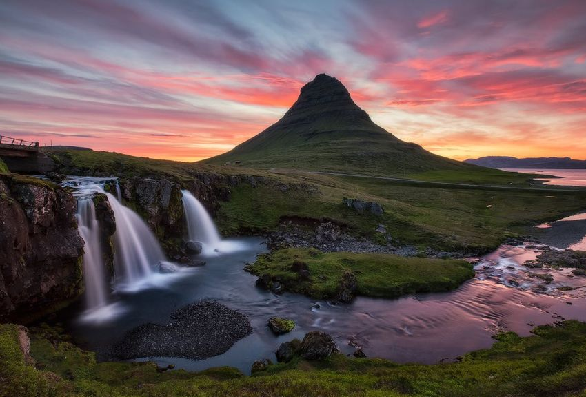
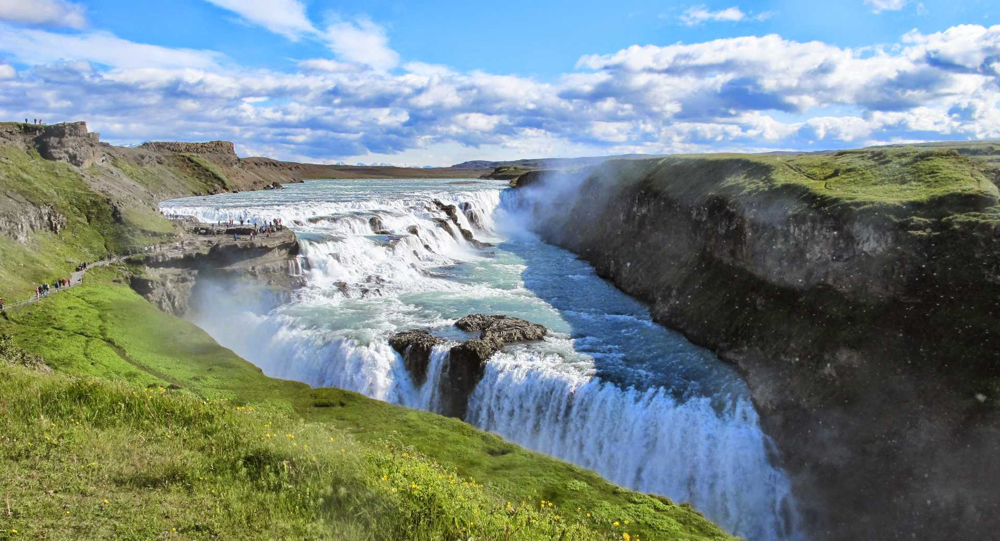
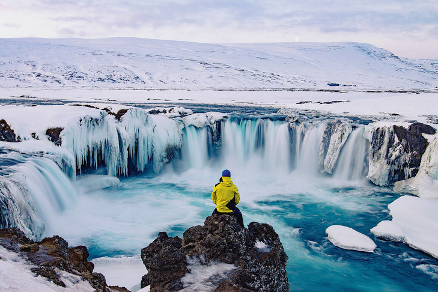
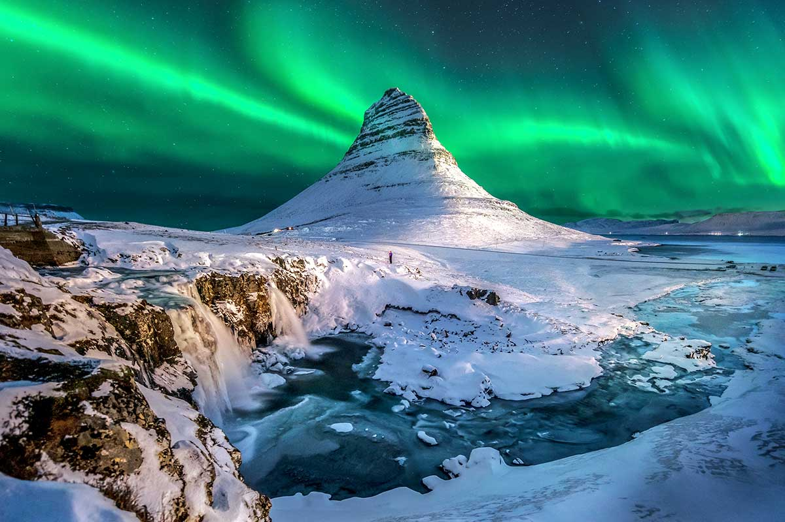
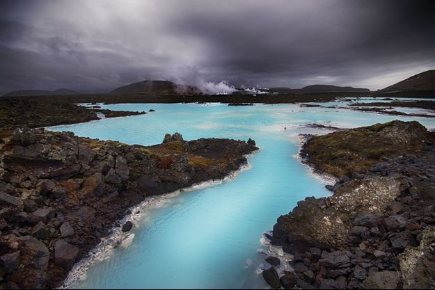
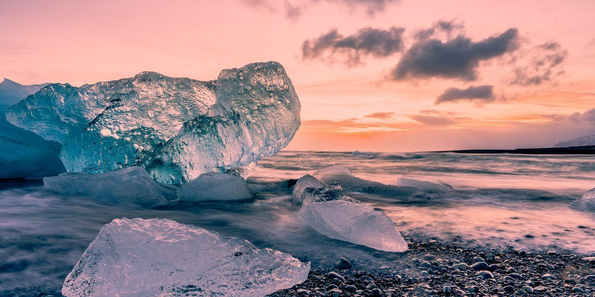
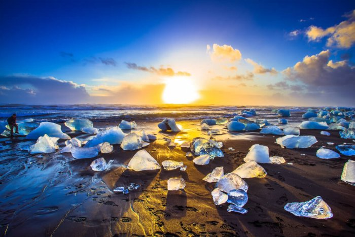
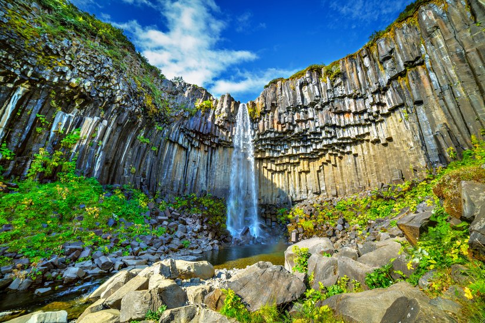

L'islande
L’Islande est un pays paradoxal : île isolée au milieu de l’Atlantique, très peu peuplée, située non loin du cercle polaire arctique, soumise à un climat rude et bénéficiant d’une terre difficile, elle est néanmoins l’un des pays les plus développés au monde.
Voici quelques informations permettant de mieux saisir le contexte islandais actuel.
« Ís-land » signifie « terre de glace », et pour cause : 10% du territoire est couvert toute l’année de glaciers,
et pendant les mois d’hiver la neige peut s’accumuler sur plusieurs mètres dans certaines régions.
et pendant les mois d’hiver la neige peut s’accumuler sur plusieurs mètres dans certaines régions.
Terre de glace, mais également terre de feu, puisque l’île est située directement sur la dorsale atlantique, à cheval sur la plaque tectonique américaine à l’ouest et eurasiatique à l’est, et qu’un point chaud se trouve sous le massif du plus grand glacier d’Europe, le Vatnajökull, au sud du pays.
Du fait de cette activité volcanique intense, la terre islandaise est constamment en expansion et en mouvement. Environ 23% du territoire est d’ailleurs recouvert de champs de lave nue formés lors d’éruptions plus ou moins récentes.
Le reste du territoire se compose de landes rases (35%), de tourbières (7%), de cendres ou de sables (3%), de quasi-déserts (13%) et de terres agricoles (2,5%).
Du fait de cette activité volcanique intense, la terre islandaise est constamment en expansion et en mouvement. Environ 23% du territoire est d’ailleurs recouvert de champs de lave nue formés lors d’éruptions plus ou moins récentes.
Le reste du territoire se compose de landes rases (35%), de tourbières (7%), de cendres ou de sables (3%), de quasi-déserts (13%) et de terres agricoles (2,5%).
L’Islande est sans aucun doute l’une des plus belles destinations si l’on est un amoureux des beaux paysages.
Volcans, lacs avec eau d’une pureté incroyable, glaciers immenses et somptueux, fjords aux montagnes plongeant dans la mer, la diversité des paysages d’Islande est due à plusieurs phénomènes :
Sa géographie si contrastée, son volcanisme omniprésent ou encore son climat si particulier qui permet d’avoir de magnifiques glaciers…
Volcans, lacs avec eau d’une pureté incroyable, glaciers immenses et somptueux, fjords aux montagnes plongeant dans la mer, la diversité des paysages d’Islande est due à plusieurs phénomènes :
Sa géographie si contrastée, son volcanisme omniprésent ou encore son climat si particulier qui permet d’avoir de magnifiques glaciers…
Lorsque l’on part en Islande, il faut s’attendre à en prendre plein les yeux.
Effectivement, ce pays de l’Atlantique Nord est un véritable concentré de paysages parfois si différents en seulement quelques kilomètres.
La nature encore largement préservée des destructions humaines permet de découvrir des panoramas à couper le souffle et fait le bonheur des photographes, des cameramen et aussi des touristes.
En plus des paysages islandais, vous pourrez aussi découvrir les fabuleuses aurores boréales (de septembre à mars) ou encore le soleil de minuit (de juin à juillet).
Chaque saison a donc ses attraits et cela vous fera découvrir de nouveaux paysages…
Effectivement, ce pays de l’Atlantique Nord est un véritable concentré de paysages parfois si différents en seulement quelques kilomètres.
La nature encore largement préservée des destructions humaines permet de découvrir des panoramas à couper le souffle et fait le bonheur des photographes, des cameramen et aussi des touristes.
En plus des paysages islandais, vous pourrez aussi découvrir les fabuleuses aurores boréales (de septembre à mars) ou encore le soleil de minuit (de juin à juillet).
Chaque saison a donc ses attraits et cela vous fera découvrir de nouveaux paysages…



